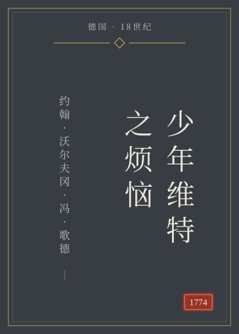
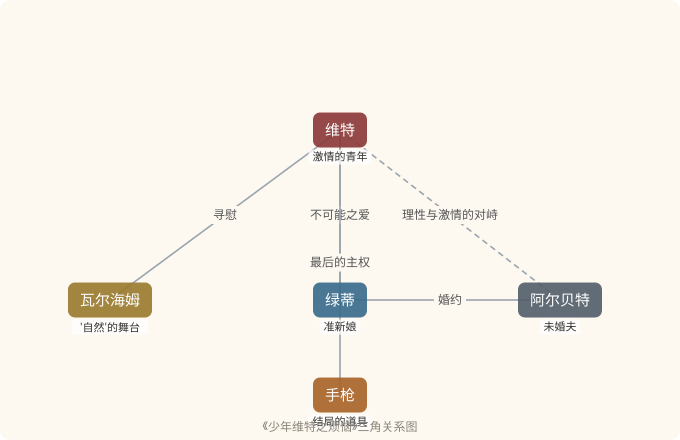

少年维特之烦恼
一、基本信息
| 作者 | 歌德 |
|---|---|
| 成书/出版 | 1774年出版（Britannica） Johann Wolfgang von Goethe — Encyclopaedia Britannica（百科全书） |
| 国别/地区 | 德国 |
| 时代 | 近代 · 18世纪 |
| 体裁 | 书信体长篇小说 |
| 语言 | 德语 |

《少年维特之烦恼》三角关系图（人物关系图）
二、创作背景
创作缘起（Britannica 语境）：1772年歌德在韦茨拉尔帝国法院实习，恋上有未婚夫的夏绿蒂·布恩并一度想到自杀——把这段经历与其友人耶路撒冷（Karl Wilhelm Jerusalem，因爱情与职场屈辱自杀）的故事熔铸成书（通说待核）。
狂飙突进的宣言：Britannica 称其为狂飙突进运动的首部小说（'Werther was its first novel'）；对感伤、个性与'自然'的张扬直击启蒙理性主义。
'维特热'与道德恐慌：出版后欧洲青年仿其着装（蓝上衣黄马甲）、引发自杀模仿争议（'维特效应'一词的来源——通说待核），多个城市曾禁售。
三、内容脉络
第一编（书信体）：维特——才华横溢的青年——到瓦尔海姆小镇画风景，遇上正在为亡母抚养弟妹的绿蒂，一见倾心；绿蒂已与阿尔贝特订婚。三人短暂的'美好'：维特在甜蜜的煎熬中研读荷马、陪绿蒂跳舞、削面包——'她用刀切面包分给弟妹'成为天堂的意象（原文意，公有领域）。
煎熬：阿尔贝特归来后，三角关系无法维系；维特受聘公使馆又因贵族圈子歧视受辱（通说细节）——'我知道我的一切都不会有结果'（原文意，待核）。辞职、漫游，再回瓦尔海姆：绿蒂已是人妻。
结局：绿蒂应维特之请弹琴（《苏格兰民谣》——情感决堤，通说待核）；圣诞前夜，维特借走绿蒂的丝带，写诀别信后开枪自尽——'绿蒂，愿这血在你的窗前浇花'（原文意，待核）。'葬礼没有牧师'收束全书。
四、主要人物表
| 人物 | 身份 | 说明 |
|---|---|---|
| 维特 | 青年职员·画家气质 | '激情的自我'——为感受而生的时代新人，其自杀是殉情也是抗议 |
| 绿蒂（夏绿蒂） | 准新娘·家庭长女 | 以责任束缚情感的美德化身——既是维特的天堂也是其地狱 |
| 阿尔贝特 | 绿蒂未婚夫 | 理性、克制而并非坏人的'第三者'——启蒙理性的化身 |
| 威廉 | 收信人 | 维特书信的接受者（通说） |
五、主题与艺术特点
- 感性与理性的战争：维特代表的'天才—激情'与阿尔贝特代表的'规则—理性'——狂飙突进对启蒙理性的反叛（通说）。
- 不可能之爱的美学：得不到的爱比得到的爱更纯粹——维特拒绝一切'折中'。
- 自杀作为最后的主权：用死亡夺回对生命的主权（其信中'我要到天父那里去'——原文意，待核）——18世纪自杀论战（通说待核）。
- 艺术特点：书信体（自我分析的自白装置）、荷马/莪相的互文（从荷马的明朗转向莪相的阴郁预示结局——通说）、日记与编辑者的框架（第二编编辑者附言）。
六、影响与评论
- Britannica（Goethe 条目）：Werther 是狂飙突进运动的首部小说；歌德因此书成名欧洲。
Johann Wolfgang von Goethe — Encyclopaedia Britannica（百科全书） - Britannica：歌德被 placement 'alongside Shakespeare and Dante'——此书是那项声誉的第一基石。
Johann Wolfgang von Goethe — Encyclopaedia Britannica（百科全书） - '维特效应'：自杀模仿研究以本书命名（Phillips 1974 学术术语——通说待核）；拿破仑读后评价（通说轶事待核）。
Johann Wolfgang von Goethe — Encyclopaedia Britannica（百科全书） - 书信体小说的巅峰之一：《新爱洛伊丝》之后的欧洲感伤主义最高峰（通说）。
Johann Wolfgang von Goethe — Encyclopaedia Britannica（百科全书）
七、阅读建议
难点
- 感伤主义语调（狂喜与绝望的反复）现代读者易觉得'矫情'——需回到1774年的语境。
- 书信体的时间跳跃（编者按插入）需要适应。
- 莪相诗段（奥西恩）的阴郁互文易被忽略。
- 郭沫若译《少年维特之烦恼》（人民文学出版社）：经典早期译本。
- 杨武能译本（译林/人民文学）：现代通行。
- 英译：Michael Hulse（Penguin，通说待核）。
通读两编 → 精读'切面包'段与'诀别'段 → 对照《浮士德》'格蕾卿悲剧'看歌德处理殉情主题的两种方案。
八、待核实
- 1774年首版（莱比锡 Weygand 书局说，通称）与1775年修订版的差异待核。
- 耶路撒冷事件（1772）与小说情节的对应细节待核。
- '维特效应'术语出处（Phillips 1974 论文）待核。
- 郭沫若/杨武能译本出版信息待核。
本页主要来源
歌德的其他收录作品：浮士德